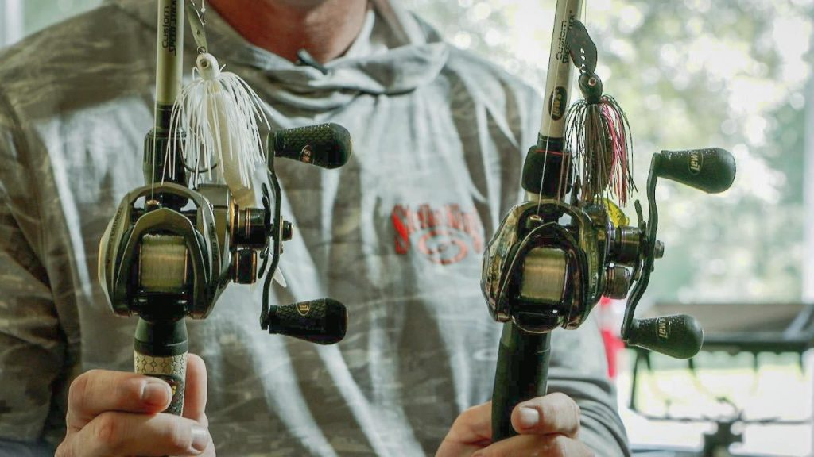
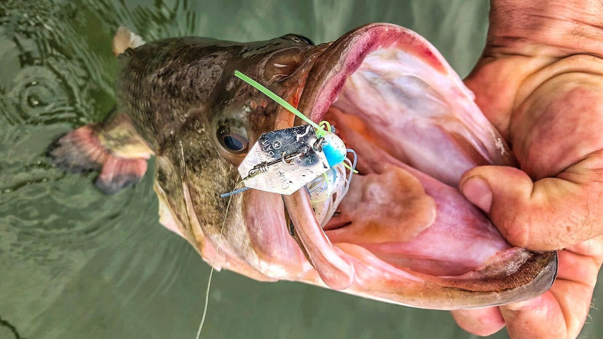

These vibrating jigs, or bladed jigs, as many call them, are some of the best-producing lures for bass today. They work in many different situations
and can be fished around grass, rocks, and anywhere else a bass may live. The unique blade design puts off tons of vibration, making them one of the best lures you can
use in shallow water.
ROD

Rod, Reel, and Line
When fishing bladed jigs, anglers usually prefer a longer medium-heavy to heavy powered rod in the 7’3” – 7’11” range with a parabolic action. The added
length helps with longer casts, taking up line for quality hooksets, and snapping the blade clear of vegetation.
Fiberglass rods (often referred to as simply glass rods) with a moderate action are generally favored as they help keep the blank loaded when fighting a
fish and prevent situations where you could be pulling the jig out of the fish’s mouth.
Some anglers prefer a graphite rod (also with a parabolic bend) over glass rods, as graphite rods typically offer a little extra power when fishing around
excessive amounts of cover or using a heavily weighted bladed jig.
REEL
Casting reels with a gear ratio in the 6:1 – 7:1 range are ideal for fishing bladed jigs, as they give the angler the ability to slow down or speed up their
retrieve to match the mood of the fish no matter the season.
Gear ratios 8:1 or faster are great for covering water, but be careful using higher speed reels, as they can also tend to overpower the jig and prevent the
blade from vibrating properly.
A 100- to 200-size casting reel provides a palm-perfect fit that should offer plenty of line capacity while remaining compact and easy to fish. Bladed jigs
often call for higher-pound test lines and longer casts to cover water more efficiently, so keep these factors in mind when selecting a reel.
LINE
During most of the year, fluorocarbon is going to be your best option for bladed jigs. Flurocarbon's translucency, minimal stretch, and solid abrasion resistance
ensure that bass won't see your line as it comes through the water column while also providing the strength necessary to tame big fish and heavy cover.
Line size is always dictated by where you intend on fishing and the size of your bladed jig, but fluorocarbon lines in the 12- to 20-lb range are ideal, with 15
lb being the sweet spot.If the water is super clear or you are using a lightweight bladed jig, feel free to go down in line size, but if there is some stain in
the water, you’ll want to use line that’s as heavy as you can get away with.
Some anglers will even switch to 40- to 50-lb braided line when fishing around heavy grass to help snap their bladed jig out of vegetation and clear the blade.
A closed eye snap is often preferred when fishing around heavy cover with braided line, as the snap is less likely to open up on a heavy hookset.
I don't exaggerate... I just remember BIG!" - Chi Chi Rodriguez
How & When to Chatterbait!

Vibrates To Draw Attention!
When fishing open water or just burning the bank, an irregular retrieve is often the key to provoking a reaction strike, whether you are imparting action with the
rod tip or simply varying your retrieve speed. Just like many productive moving baits, it’s all about doing something out of the norm to entice a stubborn fish
into biting, so try giving your reel a speedy half-turn or twitch of the rod tip to flare the skirt and add some erratic action. A small departure from a straight
retrieve might be all a finicky fish needs to commit to biting.
The bladed jig is one of the best tools for catching bass around shallow grass patches—whether you’re fishing along the outside edges of vegetation or burning it
over submerged vegetation. Oftentimes, anglers fishing around grass will rely on slightly different gear to get the job done, including braided line, a slightly
heavier rod, and a bladed jig with a closed eye snap. If you are not feeling grass or cover during your retrieve, slow down until you come into contact with it or
try pausing completely from time to time to let the bait fall to the bottom.
When you feel the blade stop vibrating, you either have a bite or need to clear the blade of vegetation with a sharp pop of your rod tip. For this reason,
side-sweeping hooksets are most commonly used, and your goal is to continue reeling when you have a bite to load the rod tip and feel the weight of the fish.
If the fish are positioned deep in the water column, the bite may involve hopping the bait much like a traditional jig, in which case a conventional upward
jig hook set would still apply.